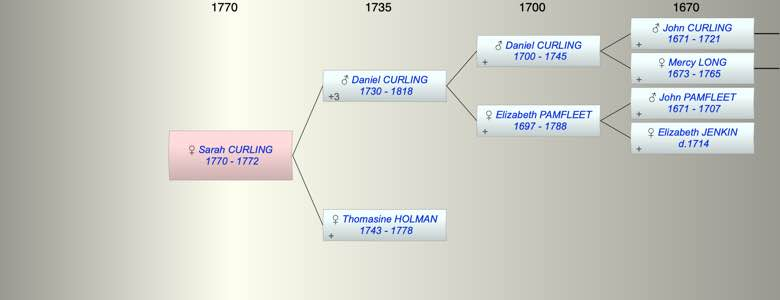

| [Index] |
| Sarah CURLING (1770 - 1772) |
|  |
| b. 29 Oct 1770 at St Laurence |
| d. 1772 aged 2 |
| Parents: |
| Daniel CURLING (1730 - 1818) |
| Thomasine HOLMAN (1743 - 1778) |
| Events in Sarah CURLING (1770 - 1772)'s life | |||||
| Date | Age | Event | Place | Notes | Src |
| 29 Oct 1770 | Sarah CURLING was born | St Laurence | Note 1 | ||
| 1772 | 2 | Sarah CURLING died | |||
| Note 1: bap St Laurence 20 Nov 1770 ex FMP PR |
| Personal Notes: |
| presumably died in infancy |
| Created on a Mac™ using iFamily for Mac™ on 8 Oct 2023 |